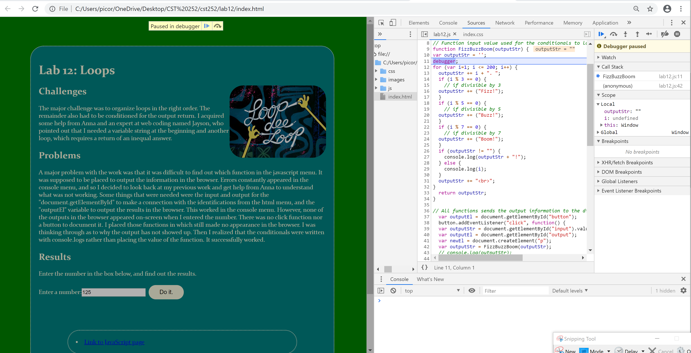
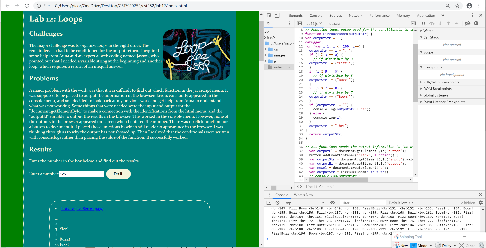
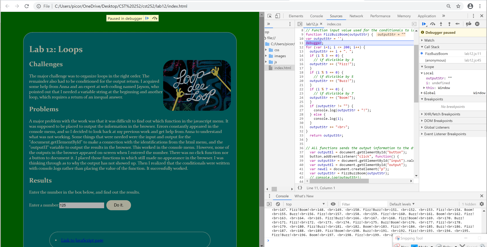

the only challenge was working on the debugger tool with every javascript lab.
The only problem was that one debugger tool did not pause in each function when I worked on lab 12. Then, the debugger tool was supposed to be at the beggining of the loop conditional pause the function one at a time.
There are no results regarding the errors of the debugging tool, but the images of the process are presented in the "Debugging" section below.
  